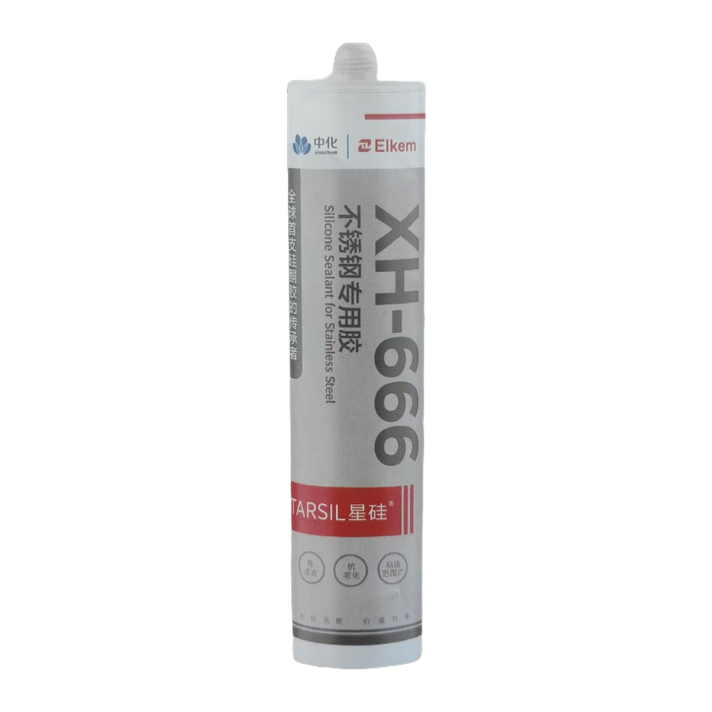
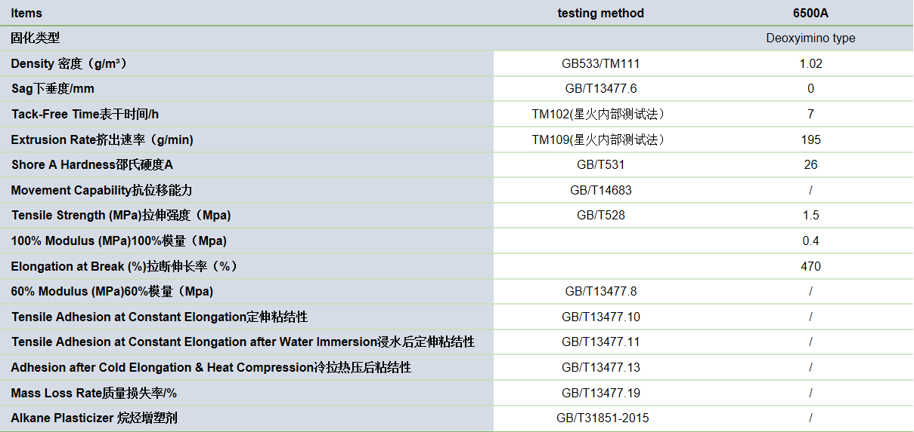
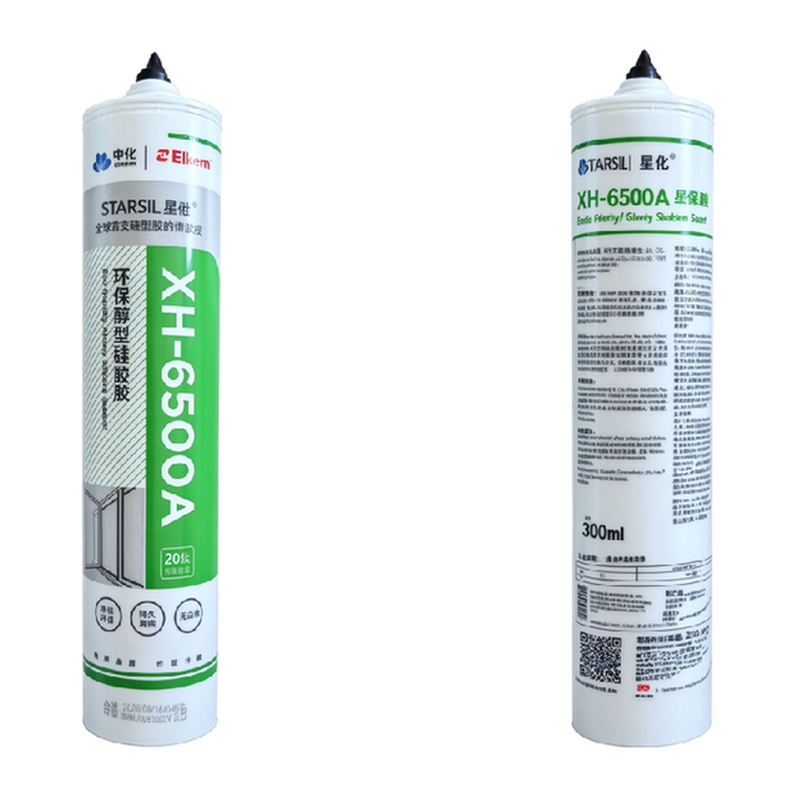
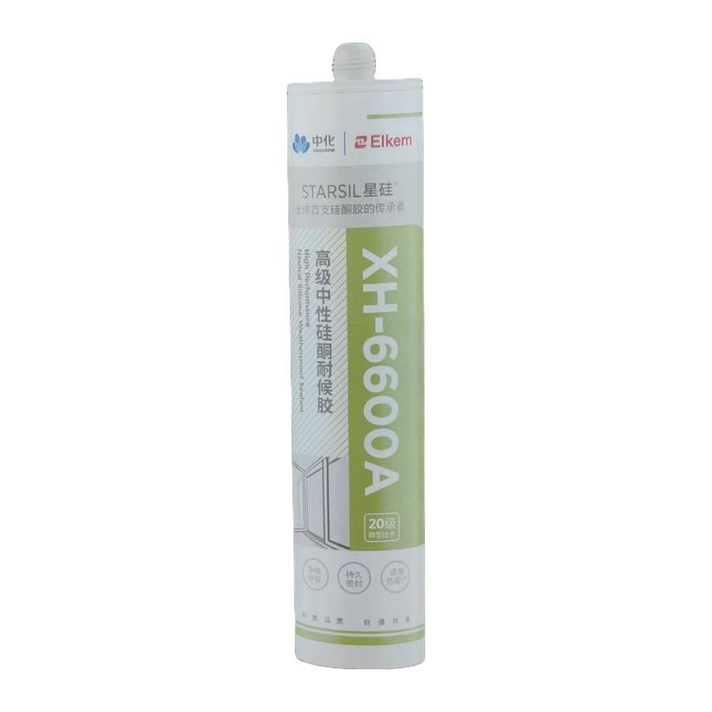
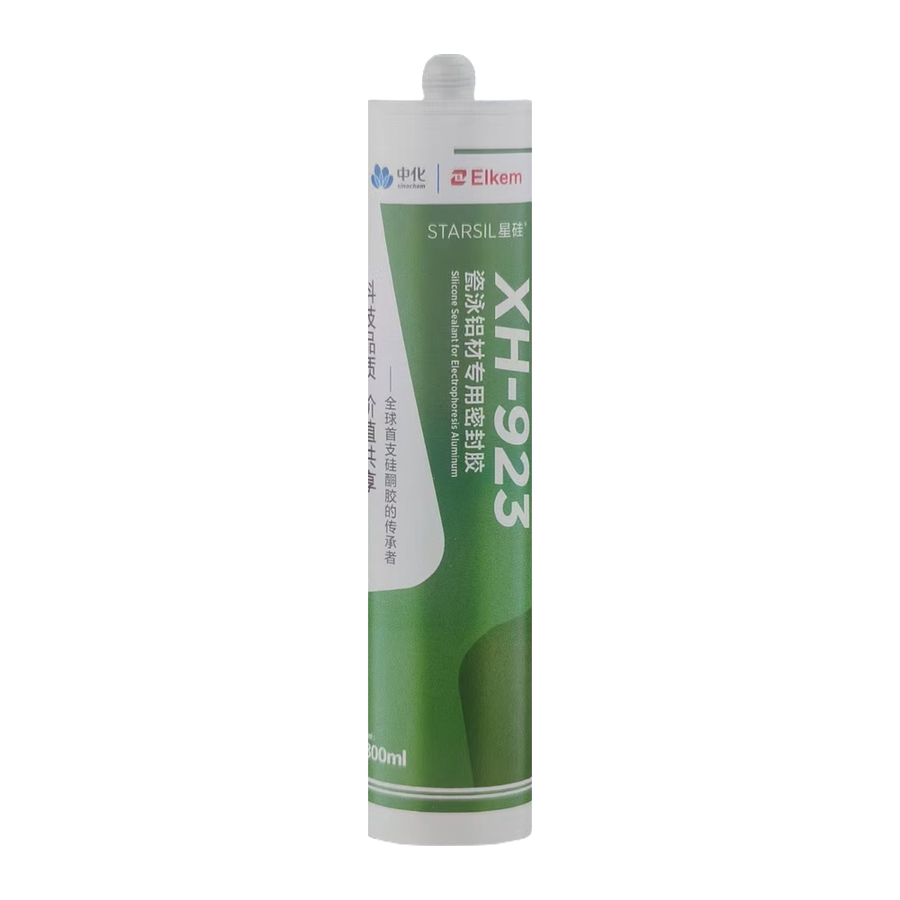

Neutral-cure silicone with outstanding adhesion to stainless steel doors and windows.

XH-666 is a one-component, neutral-cure, ready-to-use silicone elastomer with nice appearance. It is suitable for weatherproof sealing of doors and windows in construction, and features outstanding adhesion to stainless steel. It cures rapidly at room temperature to form a flexible and firm seal.
Bonding, gap filling and sealing for all types of stainless steel doors and windows. Also suitable for bonding, gap filling and sealing of building materials such as aluminum alloy, glass, ceramic and UPVC.
Not to be used on surfaces of materials that exude oil or other solvents. Not suitable for frosty or damp surfaces, or airtight enclosed spaces. Do not apply when the substrate temperature is below 4℃. This is a non-structural product and shall not be used for structural glazing.
| Packing | color | Qty/ctn |
|---|---|---|
| 300ml/cartridge | Black ,or customized | 24pieces |
| 500ml/sausage | Black ,or customized | 20pieces |
| 590ml/sausage | Black ,or customized | 20pieces |

It is a non-hazardous product, please store it in a cool and dry place with the temperature below 27℃ and the relative humidity should not exceed 50%. XH-666 is valid for 12 months from the date of manufacture, it is recommended to use it as soon as possible.
XH-666A begins to cure from the surface in contact with moisture in the air, and should be trimmed immediately after gluing. The initial stage of glue application should keep the part that needs to be sealed fixed and leveled. Generally no maintenance is required. If damage occurs, the cause should be identified first and targeted repair.
This product is non-toxic and harmless to human body after fully cured. But you still should pay attention to the following:
During the curing, the temperature difference between day and night on the substrate surface or the thermal expansion and contraction of the substrate will cause changes in the glue joint. This can easily cause the surface of the glue joint to be uneven, i.e., bulging. In order to achieve satisfactory results, the gluing experiment is necessary in line with the requirements of the large-scale construction.

One-component neutral-cure sealant, stable from -40 °C to 150 °C, non-corrosive.
View details →
Alcohol-type neutral-cure sealant for door and window glass assembly sealing.
View details →
Neutral-cure weatherproof sealant offering 20% movement capability after curing.
View details →
Specially designed for porcelain electrophoretic aluminum profiles and high-end doors.
View details →